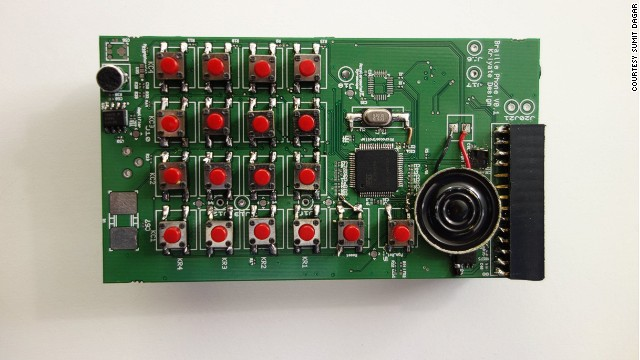
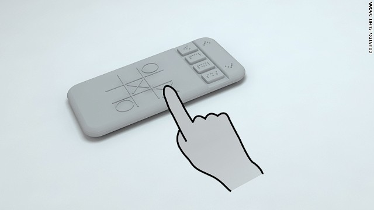
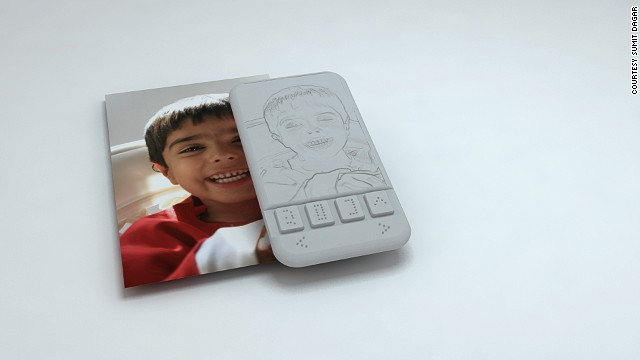
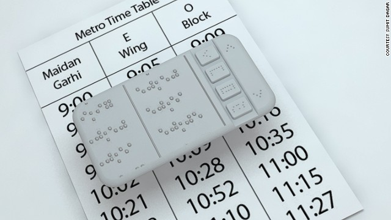
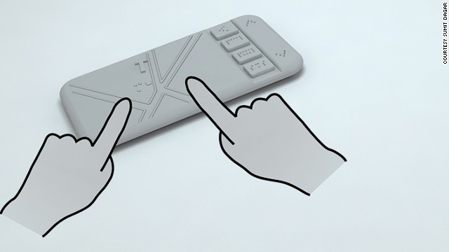

Motivado pela percepção de um dos seus criadores de que as tecnologias atualmente, servem apenas para a maioria das pessoas, ignorando os menos privilegiados.
The Phone
idealizado por Sumit Dagar e uma equipe de 6 integrantes
possui uma tela preenchida com uma grade de pinos
tecnologia Shape Memory Alloy
atualmente um protótipo
The Phone

The Phone (jogos)

The Phone (scanner)

The Phone (ocr)

The Phone (mapas)

The Phone
Espera-se lançá-lo no final de 2013 com o custo de aproximadamente $185